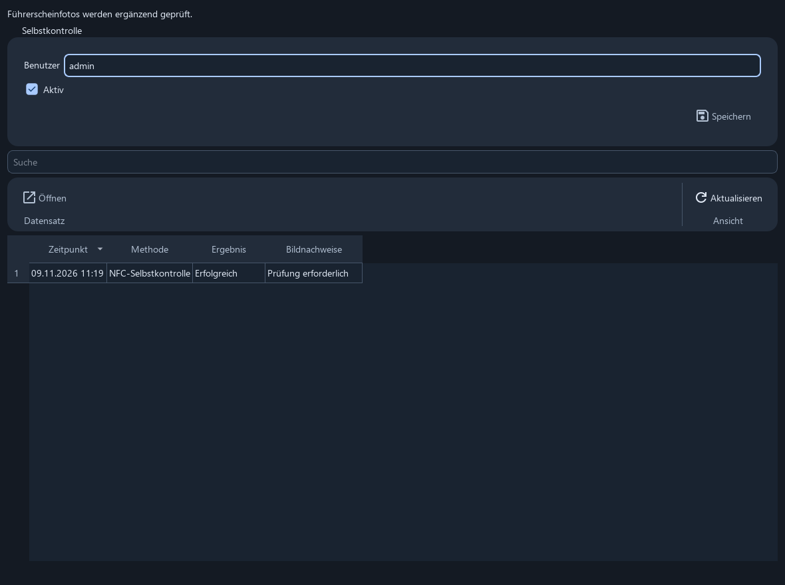
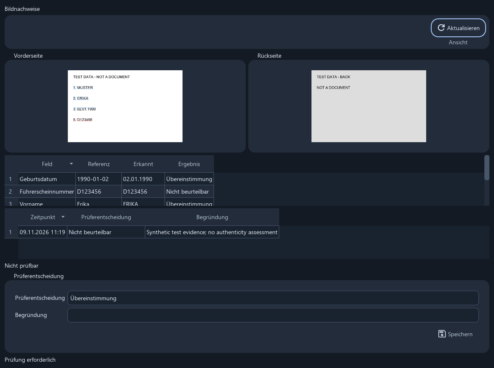

Mobile Führerscheinkontrolle¶
Die authentifizierte Schnittstelle unter /api/mobile/v1/fsk verbindet die DTCO-Android-App mit der vorhandenen Führerscheinkontrolle in Fleet Mira. Pro verwendet SQLite und den Worker der laufenden Desktop-Anwendung. Enterprise verwendet FleetMiraApi, tenantgebundenes PostgreSQL und FleetMiraWorker. Basic stellt diesen Dienst nicht bereit. Eine erfolgreiche Kontrolle aktualisiert dieselben Fristen wie die bestehende Desktop-Kontrolle.
Einrichtung und Berechtigungen¶
Android benötigt mindestens Android 10 sowie für Kontrollen einen kompatiblen NFC-Leser im Telefon; optionale Fotos benötigen eine verfügbare Kamera-App. Für reine Auswertungen sind NFC und Kamera nicht erforderlich. Das Windows-Setup muss API, Worker und versioniertes Datenbankschema gemeinsam aktualisieren. Die lokale OCR-Laufzeit und alle vier Sprachdateien werden im Setup gebündelt; der Dienst lädt keine externen OCR-Modelle nach. Das Dienstkonto benötigt die bestehenden geschützten Zugriffsrechte auf den Daten- und Dokumentbereich. Freien Speicher entsprechend Kontrollzahl und Aufbewahrung planen: Ein angenommenes Bildpaar kann bis zu 20 MiB Originaldaten plus temporäre Arbeits- und Sicherungskopien belegen.
- HTTPS-Listener und ein auf Android vertrauenswürdiges Serverzertifikat gemäß API-Dienst einrichten. Keine zusätzliche Netzwerkfreigabe ist erforderlich. Bei Pro muss die Anwendung mit eingerichtetem mobilem HTTPS-Listener laufen; ohne laufende Anwendung ist die Schnittstelle nicht erreichbar.
- Personen, Kontrollpflicht, Intervall und aktive RFID-Zuordnung weiterhin am Desktop pflegen. Der zusätzliche Reiter Mobile Führerscheinkontrolle befindet sich in der Personalakte.
- Für Selbstkontrollen einen Benutzer explizit genau einer Person zuordnen und die Freigabe aktivieren. Dafür sind
users.manageundfleet.manageerforderlich; der zugeordnete Benutzer benötigtfsk.self. Eine passende E-Mail-Adresse stellt keine Zuordnung her. - Im OAuth-Client
dtco-androiddie benötigten Scopes zulassen. Bestehende Enterprise-Client-Konfigurationen werden nicht automatisch um Rechte erweitert. In der Android-App unter Einstellungen die mobile Führerscheinkontrolle öffnen, Fleet-Mira-Ziel auswählen und über Anmelden im Browser anmelden. Der Server reduziert die angeforderten Scopes auf die aktuellen Benutzerrechte. Frühere Tokens erhalten keine zusätzlichen Rechte.
| Scope | Benutzerrecht und Zweck |
|---|---|
fsk.self.read |
fsk.self: ausschließlich eigener Status und eigene Historie |
fsk.self.check |
fsk.self: freigegebene eigene NFC-Kontrolle und eigene Bildübertragung |
fsk.read |
fsk.read: tenantgebundene Auswertung und Kontrollhistorie |
fsk.check |
fsk.check: Prüferkontrolle einer bekannten Person |
fsk.evidence.read |
fsk.evidence.read und fsk.read: geschützte Bilder und Analyse |
fsk.evidence.review |
zusätzlich fsk.check, fsk.read und fsk.evidence.read: begründete Prüferentscheidung |
Die App verwendet Browser-PKCE mit einmaligem Code und automatisch erneuertem Token. Tokenwiderruf, Berechtigungsänderung oder Entzug der Selbstkontrollzuordnung sperren weitere Zugriffe. Tenant und Datenwurzel werden ausschließlich serverseitig bestimmt. Plattformadministration allein gewährt keine fachlichen Tenantrechte.
Die gezielt zuweisbare Rolle FSK_SELF (Selbstkontrolle) enthält ausschließlich fsk.self; die persönliche Freigabe bleibt zusätzlich erforderlich. FSK_REVIEWER (Führerscheinkontrolle) enthält die fachlichen FSK-Lese-, Kontroll- und Bildprüfrechte sowie fleet.read, jedoch keine Benutzer-, Stammdaten- oder Archivverwaltung. Enterprise kann diese Rollen in der jeweiligen Tenant-Mitgliedschaft ergänzen. Bei Pro erfolgt die Rollenzuordnung in der Benutzerverwaltung. Bestehende Standardrollen und Mitgliedschaften erhalten die neuen Rechte nicht automatisch.
Ablauf¶
sequenceDiagram
participant A as DTCO Android
participant API as Fleet Mira API
participant DB as Tenantdatenbank / SQLite
participant W as Gemeinsamer WorkerRuntime
A->>API: Browser-PKCE / Token
A->>API: NFC-Anforderung für eigene oder berechtigte Person
API->>DB: Aktuelle Rechte, Zuordnung, RFID prüfen
API-->>A: Einmalige Anforderung, 120 Sekunden
A->>API: Gelesene UID + Idempotency-Key
API->>DB: Kontrolle und nächste Frist atomar speichern
API-->>A: Erfolgreiche NFC-Kontrolle
opt Ergänzende Fotos
A->>API: Vorderseite und Rückseite aus Kamera
API->>DB: Vollständiges Bildpaar vormerken
W->>DB: Auftrag übernehmen
W->>W: Originale archivieren, lokale OCR / Vergleich
W->>DB: Versionierte Analyse zur Prüfung
A->>API: Geschützte Bilder und Analyse lesen
A->>API: Berechtigte, begründete Prüferentscheidung
endSelbstkontrollen werden als MOBILE_NFC_SELF, Prüferkontrollen als MOBILE_NFC_INSPECTOR nachvollziehbar gespeichert. Eine NFC-UID allein ist kein kryptografischer Beweis des Originaldokuments oder der Identität des Inhabers. Die Bildprüfung ergänzt die bereits wirksame NFC-Kontrolle; OCR-Fehler oder ein abweichender Bildbefund setzen sie und ihre nächste Frist nicht zurück.
Schnittstellenvertrag¶
Methode und Pfad relativ zu /api/mobile/v1/fsk |
Funktion |
|---|---|
GET /self |
Eigener Status, nächste Frist, Profilregion und Sprache |
GET /self/checks |
Eigene paginierte Historie |
POST /self/challenges |
Einmalige Selbstkontrollanforderung |
POST /self/checks |
NFC-Kontrolle bestätigen |
GET /evaluation |
Auswertung mit Suche, Status, Datum, Kontrollpflicht und RFID-Filter |
GET /persons/{personId}/checks |
Berechtigte Personenhistorie |
POST /persons/{personId}/challenges |
Prüferanforderung |
POST /persons/{personId}/checks |
Prüferkontrolle bestätigen |
Für Bildpfade ist {context} entweder self oder persons/{personId}:
| Methode und Pfad | Funktion |
|---|---|
POST /{context}/checks/{checkId}/evidence |
Bildpaar anlegen, leeres JSON, Idempotency-Key |
PUT /{context}/evidence/{id}/front und /back |
JPEG/PNG binär mit X-Content-SHA256 |
POST /{context}/evidence/{id}/complete |
Vollständiges Paar übergeben, leeres JSON |
GET /{context}/evidence/{id} |
Bearbeitungsstand, Analyse und Prüfhistorie |
GET /{context}/evidence/{id}/front und /back |
Geschützte Originalbilder |
POST /persons/{personId}/evidence/{id}/reviews |
analysisId, decision, reason und Idempotency-Key |
Kontrollbestätigung: {"challengeId":"<id>","uid":"<gelesene UID>"} mit Idempotency-Key. Benutzer, Kontrollzeit und Methode bestimmt der Server. Selbstkontrollpfade akzeptieren keine freie Personenkennung. Wiederholung mit demselben Schlüssel liefert dasselbe Ergebnis; eine veränderte Nutzlast wird abgewiesen. Paginierung: page ab 1, pageSize maximal 100.
Fotos, Analyse und Aufbewahrung¶
Die App verwendet ausschließlich die Kamera und bereinigt EXIF-Daten vor der Übertragung. Beide unterschiedlichen Seiten sind erforderlich; pro Seite maximal 10 MiB und 24 Megapixel. Entwürfe und Nachreichung sind 24 Stunden möglich; maximal zwei offene Entwürfe pro Zugang. Die API begrenzt Schreibzugriffe auf 30 pro Minute und Zugang. Unvollständige Entwürfe werden vom laufenden Worker bereinigt. Bei unterbrochenem Upload lassen sich dieselben Seiten wiederholen.
Der Worker archiviert die empfangenen Originale tenantgebunden mit Hash und Manifest und vergleicht lokal Nachname, Vorname, Geburtsdatum und Führerscheinnummer mit einem bei der Einreichung festgehaltenen Stammdatensatz. Erkannte Textbereiche werden in Desktop und Android hervorgehoben. Abweichungen, fehlende Referenzen und unsichere OCR bleiben sichtbar. Begründete Entscheidungen sind an die konkrete Analyseversion gebunden und werden als Historie ergänzt.
Freigabegrenze: Der aktuelle Parser erkennt allgemeine nummerierte EU-Felder. Eine qualifizierte automatische Länder-/Kartenmodellzuordnung ist noch nicht freigegeben; Modelle bleiben UNSUPPORTED_MODEL und erfordern manuelle Prüfung. UV-, Tast- und optisch variable Merkmale lassen sich aus zwei normalen Fotos nicht zuverlässig prüfen. Ein Datenabgleich bestätigt keine Echtheit. Es werden keine biometrischen Vergleiche und keine externen OCR-Dienste verwendet.
Die konfigurierte Dokumentaufbewahrung wird bei Einreichung festgehalten, technisch standardmäßig acht Jahre. Das Datum ist keine automatische Löschfreigabe. Bestehende berechtigte Archivierungs-/Bereinigungsprozesse bleiben maßgeblich. Endgültige Bereinigung eines Seitenoriginals bereinigt das zugehörige Paar sowie gespeicherte OCR- und Referenzwerte; die NFC-Kontrolle und ihre Frist bleiben erhalten. Sicherungs- und gesetzliche Aufbewahrungsvorgaben sind weiterhin nach bestehendem Archivkonzept zu behandeln.
Bestehende Enterprise-Installation aktualisieren¶
Dieser Schritt ist eine lokale Administratorwartung; W25 behält seine aktuelle Control-Datenbank und alle veröffentlichten Kundendatenbanken. Zuerst alle Clients schließen und FleetMiraApi, FleetMiraWorker, FleetMiraArchive und FleetMiraProvisioner beenden. PostgreSQL bleibt aktiv. Verifizierte Sicherungen aller Datenbanken sowie der geschützten Datenverzeichnisse, Archive, Schlüssel, Profile und Berechtigungen aufbewahren. Eine Wiederherstellungsprobe erfolgt ausschließlich in markierten Wegwerfdatenbanken.
Das geschützte Sicherungsmanifest enthält schema: 1, den exakten Datenbanknamen in database, restore_test_exit_code: 0, eine Liste files mit relativen Pfaden und SHA-256 sowie source_witness: eine mitgehashte JSON-Datei mit Anzahl und sortiertem Zeilenhash jeder öffentlichen Tabelle. Das Control-Manifest ordnet unter tenant_backups jeder veröffentlichten Tenant-UUID ihr relatives Datenbankmanifest zu. Die Zeugen müssen noch mit den unveränderten Quelldaten übereinstimmen. Manifest und Datenbankkopien enthalten geschützte Informationen und gehören nicht in öffentliche Testberichte.
Das serverseitige Setup erhält /MIRAFSKBACKUPMANIFEST="C:\geschuetzte-Sicherung\manifest.json". Es ruft vor dem Dienststart die Owner-Migration auf. Ohne diesen Parameter verlangt es bereits aktuelle Schemata und bricht bei ausstehender Migration ab. Alternativ ist der Wartungsschritt ausdrücklich lokal aufrufbar:
FleetMira.exe --tenant-admin mobile-fsk-upgrade --root "C:\ProgramData\eh-systemhaus\FLEET Mira Enterprise"
FleetMira.exe --tenant-admin mobile-fsk-upgrade --root "C:\ProgramData\eh-systemhaus\FLEET Mira Enterprise" --apply --backup-manifest "C:\geschuetzte-Sicherung\manifest.json"
Der erste Aufruf prüft nur. Die Änderung verwendet bestehende Owner-Rechte, ergänzt die sechs FSK-Tabellen und Rollen und stellt die eingeschränkten Dienstrechte einschließlich RLS wieder her. Sie verifiziert bestehende Geschäftsdaten; zusätzliche Rollenzuweisungen erfolgen nicht. Ein abgebrochener Schritt bleibt ein Wartungsfall: Sicherungen behalten, Ursache prüfen und Dienste erst nach erfolgreicher Prüfung starten. Ein erneuter Aufruf ist möglich, wenn aktuelle Sicherungszeugen erneut geprüft wurden. Datenbanken nach zwischenzeitlichen Schreibzugriffen niemals ungeprüft zurücksetzen. HTTPS-Profil, vertrauenswürdige Zertifikate und Netzwerkfreigaben bleiben erhalten.
Bedienoberfläche¶
Die Personalakte zeigt die explizite Zuordnung und die Kontrollhistorie. Ein Bildnachweis öffnet einen eigenen Detail-Arbeitsreiter mit beiden Seiten, erkannten Feldern und begründeter Prüfhistorie. Die folgenden Quelltest-Aufnahmen verwenden ausschließlich synthetische Daten; sie belegen keine installierte oder länderspezifische Abnahme.


Diagnose und Abnahme¶
401 verlangt erneute Anmeldung, 403 weist auf fehlende aktuelle Rechte oder Zuordnung hin, 409 auf einen Zustands-/Idempotenzkonflikt, 413 auf Größenlimits und 429 auf Raten-/Entwurfslimits. 303 bei Browseranmeldung ist die erfolgreiche Weiterleitung in die App. Rohfehler, Tokens und Bildinhalte gehören nicht in allgemeine Logs. Der Health-Status ersetzt keine fachliche Bildprüfung.
Vor einer Auslieferung sind zusätzlich zur SQLite-/PostgreSQL-Quellprüfung reale NFC-/Kameratests, qualifizierte Referenzbilder aller unterstützten Länder-/Modellversionen, Tenant-Isolation sowie eingefrorene und installierte Abnahme erforderlich. W25 ist das dauerhafte Enterprise-Demosystem mit eigener Demodatenbank; es wird nicht auf einen Snapshot zurückgesetzt. W25GH dient separaten Neuinstallationstests. Schreibtests verwenden ausschließlich markierte Wegwerfdatenbanken.